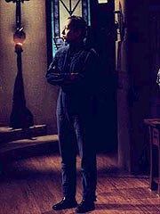
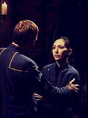
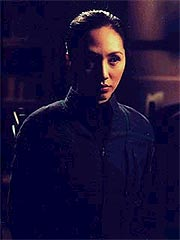
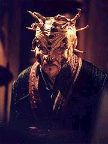
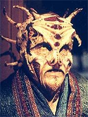
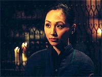

|
MANCHETE
DO EPISÓDIO
História
sensível e aposta em Hoshi
pegam pela unha seqüência de arco
Episódio
anterior | Próximo
episódio
Sinopse:
Hoshi está em sua cabine quando ouve uma voz chamar seu nome. Uma pessoa nas sombras aparece e ela chama a segurança.
Enquanto isso, T'Pol e Archer estão no centro de comando, onde ela o informa de que acredita que exista uma segunda Esfera criando ondas gravimétricas a apenas quatro anos-luz de sua posição. Eles alteram o curso para investigar.
Ao ser questionado por Hoshi, Reed diz que os registros dos sensores nas últimas 48 horas não registraram intrusos. Ele diz que ela pode ter imaginado a presença estranha, por estar sob forte estresse. Ele diz que não foi imaginação e ele promete estar atento para ocorrências estranhas no futuro. Hoshi vai então até Phlox e diz que tem visto e ouvido coisas nos últimos tempos, mas o médico não acha nada de errado.
 Mais tarde, ela está no centro de comando traduzindo parte do banco de dados Xindi. Ela ouve a voz chamando-a de novo e vê alguém nas sombras. De repente as telas dos computadores na sala mudam para uma única imagem, de um planeta. A pessoa nas sombras diz que é lá que ela espera por Hoshi. A oficial de comunicações foge correndo, mas se vê subitamente num ambiente alienígena. Ela corre por duas salas e aparece ao lado de uma montanha. Uma mão toca seu ombro e ela se vira, para ver que está de volta à Enterprise e Reed, com a mão em seu ombro, pergunta se ela está bem.
Na enfermaria, Phlox examina Hoshi, mas não encontra nada de errado. Reed diz que não há naves próximas ou intrusos na nave. Archer sugere que ela pode estar imaginando tudo, e ela diz estar convencida de que o alienígena é verdadeiro. Ela fica na enfermaria para alimentar os animais e o "intruso" agora aparece como Phlox, dizendo que tem acompanhado-a por vários dias e que gostou de ler seus pensamentos. ELe diz que ela tem uma mente singular.
Hoshi volta a se ver no planeta alienígena, e o homem-sombra finalmente dá as caras, dizendo a ela que este é seu lar. Ele diz que sabe que a Enterprise está numa missão.
Em seguida, Hoshi vai até Archer, dizendo que o homem-sombra tem habilidades telepáticas que pode usar para ajudá-los a encontrar os Xindis. Archer decide visitá-lo com Hoshi e Reed, onde o alienígena se revela para eles --e parece bem diferente do rosto humano que Hoshi viu anteriormente.
 Ele se apresenta como Tarquin e explica que não quis assustar Hoshi, quando primeiro a contatou, por isso a razão de ter se passado por humano. O alienígena diz a Archer que poderia ajudá-lo a encontrar a arma que os Xindis estão construindo. Ele pede ao capitão um artefato Xindi, explicando que poderá detectar e interpretar os sinais deixados por aqueles que o construíram. Ele diz a Archer que levará vários dias e, como uma condição para sua assistência, exige que Hoshi fique com ele durante esse período. A oficial de comunicações concorda, e Archer deixa Hoshi no planeta de Tarquin enquanto a Enterprise parte rumo à segunda esfera.
No jantar, Tarquin conta a Hoshi que teve de recriar os gostos e as texturas de seus pratos favoritos a partir da memória dela. Ela se mostra inquieta por ele saber tanto sobre ela e seu passado. Ele revela que foi exilado de seu mundo natal por causa de suas habilidades telepáticas. Outros de seu mundo sentem-se ameaçados pelos que têm essa habilidade e os isolam em planetas como o que estão agora, sem companhia alguma. Hoshi continua desconfortável e encerra rapidamente o jantar quando ele volta a falar do passado dela. Ele leva a mala dela ao quarto e presenteia a oficial com um livro de uma civilização extinta.
Enquanto isso, a Enterprise se aproxima da segunda Esfera e, conforme eles chegam mais perto, as anomalias espaciais se tornam mais freqüentes e severas. Vários tripulantes saem feridos e uma seção do casco explode. Após chegar à conclusão de que a Enterprise seria destruída se prosseguisse, Archer ordena Trip que prepara um shuttlepod com Trellium-D, para que possam ir até a Esfera.
No planeta, Hoshi vê Tarquin obtendo informações a partir do artefato Xindi. Ele diz que há muito conflito entre as cinco espécies de Xindis. Hoshi pergunta sobre o globo de cristal que ele segura, e o alienígena revela que ele o ajuda a ampliar o alcance de sua telepatia. Sua família deu a ele o globo para que ele pudesse encontrar outros, mesmo em seu exílio --justamente como ele fez com Hoshi.
 Ela tenta usá-lo e vê muitas imagens que não pode compreender. Hoshi então o deixa, dizendo que não quer interrompê-lo em seu trabalho. Depois disso, decide caminhar do lado de fora da casa e encontra quatro sepulturas. Tarquin, após repreendê-la por sair da casa, revela que elas eram suas companheiras e que como suas vidas eram naturalmente mais curtas que a dele, todas elas morreram --a mais recente há um século. Ele diz que tem 400 anos e pede que ela se torne sua próxima companheira. Hoshi recusa e corre para dentro da casa. Ele subitamente aparece lá, novamente em forma humana, tentando persuadi-la. Ele implora para que ela fique, mas ela se recusa.
Em outra parte, Archer e Trip levam o shuttlepod até a Esfera, encontrando turbulência apenas ao passar pela barreira de camuflagem. Os relés dos sensores são danificados e o capitão decide pousar na Esfera para consertá-los, em vez de voltar à Enterprise. Enquanto o engenheiro faz os reparos, acidentamente dispara um propulsor e o pod começa a flutuar. Eles disparam com as pistolas de fase no propulsor, destruindo-o. A pequena nave cai, sob efeito da gravidade, e eles retornam a bordo dela para a Enterprise, com dados para a análise de T'Pol. A NX-01 parte então de volta ao planeta de Tarquin, para buscar Hoshi.
Tarquin volta a visitar Hoshi em seus aposentos, dizendo que Archer estará lá em poucos minutos. Ele tenta convencê-la mais uma vez a ficar, e ela recusa novamente.
Mais tarde, Archer entra no quarto e pede que ela fique com Tarquin, uma vez que ele tem muita informação para dar a eles. Ela a princípio cede, e quando ela pede para dar adeus a seus amigos, Archer diz que Travis irá entender. Hoshi então percebe que é Tarquin novamente, uma vez que ela estava pensando em Travis, mas não o mencionou em voz alta.
A Enterprise entra em órbita e de repente todos os sistemas, inclusive suporte de vida, falham. Hoshi vai à sala central do casarão, onde Tarquin está meditando com seu cristal. Ela o acusa de manipular sua mente e exige saber onde está Archer. Ele diz a ela que a nave está sem energia e que, se ela concordar em ficar com ele, ele salvará seus colegas. Ela agarra o cristal dele e ameaça destruí-lo, a não ser que Tarquin restaure a energia a bordo. Ele o faz e a deixa partir, sem dar informação alguma a Archer.
 A Enterprise assume seu curso anterior. No centro de comando, T'Pol diz a Archer que deve haver pelo menos 50 esferas na Extensão criando as anomalias espaciais. Archer cogita que os mesmos que criaram as esferas possam ter criado a Extensão, e ela se pergunta por que eles fariam isso. Enquanto isso, Tarquin aparece nos aposentos de Hoshi para fornecê-la informações sobre os Xindis, com a promessa de não mais incomodá-la. Ela leva até Archer um conjunto de coordenadas para uma colônia Xindi onde parte da arma está sendo construída.
Comentários:
"Exile" é o primeiro episódio a realmente pegar pela unha o conceito de arco, desenvolvendo de forma significativa as duas principais pontas do mistério da Extensão Délfica. Em primeiro lugar, ele trata da caça aos Xindis e sua arma. Em segundo --e isso acaba até ganhando precedência--, ele desenvolve o já interessante conceito das misteriosas Esferas, iniciado em
"Anomaly" e por trás de todas as maluquices que ocorrem nessa região do espaço.
Mais do que tudo isso, entretanto, "Exile" traz uma história sensível e capaz de realmente investir em algum dos personagens regulares --uma raridade em
Enterprise e um ponto positivo para a série. Infelizmente, na construção do arco Xindi, pelo menos até aqui, os produtores apostaram demasiadamente numa temática orientada a enredo, mas se esqueceram de que os personagens são igualmente importantes. Então, vemos, por exemplo, Archer tendo posturas contraditórias sobre seu próprio caráter (basta comparar seu comportamento em
"Anomaly" e "Impulse" para ver as discrepâncias), em favor de um enredo que tem um destino pré-determinado.
O sucesso dos arcos de Deep Space Nine era fortemente baseado na interação entre os personagens como força motriz para os eventos, que por sua vez modificavam a dinâmica dos personagens, num eterno ciclo de evolução. Se os escritores tentam fazer diferente disso --os eventos é que moldam os personagens, sem um mínimo intercâmbio no outro sentido--, o resultado é uma história que, por melhor que seja, terá momentos graves de artificialidade.
Não é à toa que os aspectos mais interessantes do arco Xindi são os "high-concepts" --como a fascinante história das Esferas. É o modo Brannon Braga de escrever arcos...
 Nesse contexto, é muito bem-vindo um episódio como
"Exile", que, embora faça andar a trama orientada a enredo, ainda assim guarda a maior parte do seu tempo para contar a história de uma personagem. No caso, a premiada é Hoshi Sato. E Linda Park não decepciona, trazendo uma atuação poderosa, em sua interação com um solitário alienígena telepático, de nome Tarquin.
A dinâmica entre os dois personagens é bem executada e podemos sentir o desespero de Hoshi, ao ser literalmente virada do avesso, ao ter os pensamentos lidos, pelo alienígena misterioso. Também funcionam os elementos de terror/suspense adicionados a essa mistura, como os túmulos do lado de fora da casa e o drama mórbido do alienígena, que vive para ver todas as suas companheiras morrerem, uma após a outra.
O mais interessante de tudo é que, ao contrário do que estamos acostumados a ver recentemente em
Enterprise, Tarquin não é propriamente um vilão. É um personagem cheio de conflitos, dividido entre tornar sua vida menos insuportável e manter-se fiel a princípios éticos.
Embora, em sua essência, a história não seja radicalmente interessante de contos como "A Bela e a Fera" e "O Corcunda de Notre-Dame", o "twist" oferecido pelos aspectos de ficção científica, aliados ao poder de fazer caminhar o personagem de Hoshi Sato e, num plano mais amplo, toda a seqüência de eventos do arco Xindi colocam esse episódio num patamar acima da média.
 A trama secundária, com Trip e Archer investigando de perto uma segunda Esfera e descobrindo que deve haver uma rede delas por toda a Extensão, também funciona bem, além de ofertar a dose semanal de efeitos especiais espetaculares. Em termos de valores de produção, também se destacam os cenários da mansão de Tarquin.
Por fim, se não foi o episódio que todos esperavam, pelo menos ele oferece um gancho forte para o segmento seguinte: após seis episódios, Archer e cia. finalmente parecem estar prestes a encontrar seus famigerados inimigos...
Citações:
Tarquin - "Sometimes I don't know what is worse: being alone or having to bury the people I've come to care about."
("Algumas vezes não sei o que é pior: estar sozinho ou ter de enterrar as pessoas com quem me importo.")
Hoshi - "The next time you invite someone for a visit, you might want to let them know you're looking for a lifelong companion."
("Da próxima vez que convidar alguém para uma visita, poderia querer dizer a eles que está procurando uma companheira para a vida toda.")
Trivia:
 O ator Philip Boyd apareceu como oficial de comunicações também em
"Extinction".
O ator Philip Boyd apareceu como oficial de comunicações também em
"Extinction".
O destaque da produção é o cenário. Tarquin vive num abrigo futurista e ainda assim gótico, com detalhes arquitetônicos pintados para parecer antigos. Um arboreto e uma porção exterior do castelo são vistas no episódio, decorados por Jim Mees com velas, flores exóticas e outros apetrechos de histórias góticas.
Para Rick Berman, "Exile" é "um episódio tipo 'A Bela e a Fera'" que se torna "um episódio bem assustador".
Foi o primeiro segmento de Enterprise transmitido no formato HDTV (televisão de alta definição).
A trilha sonora foi feita por Velton Ray Bunch, que compôs várias outras músicas para
Enterprise e também para "Quantum Leap", antiga série de Scott Bakula.
Ficha
técnica:
Escrito por Phyllis Strong
Direção de Roxann Dawson
Exibido em 15/10/2003
Produção:
058
Elenco:
Scott
Bakula como Jonathan Archer
Jolene Blalock como
T'Pol
John Billingsley
como Phlox
Anthony Montgomery
como Travis Mayweather
Connor Trinneer como
Charlie 'Trip' Tucker III
Dominic Keating como
Malcolm Reed
Linda Park como Hoshi Sato
Elenco convidado:
Maury Sterling como Tarquin
Philip Boyd como oficial de comunicações
Episódio
anterior | Próximo
episódio
|